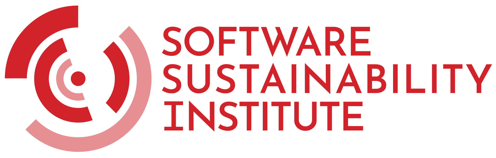
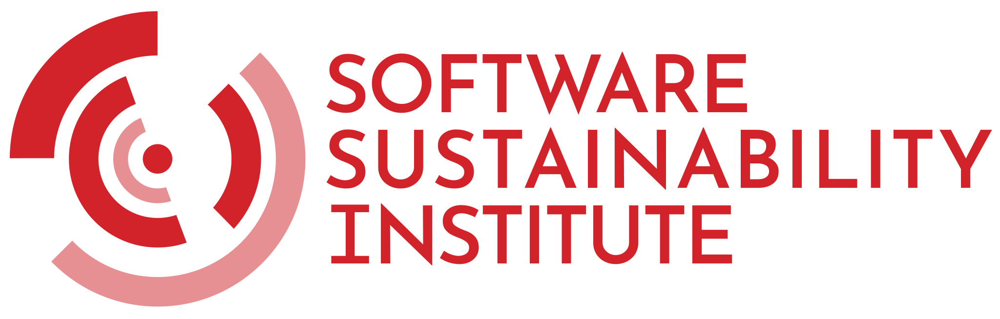
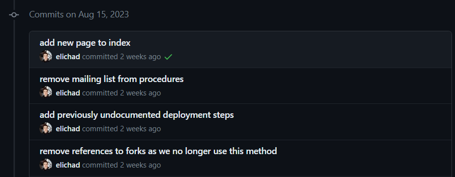
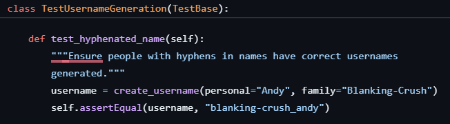
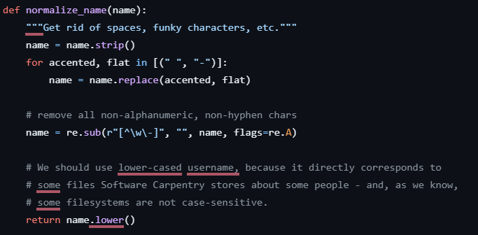
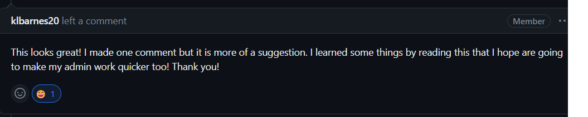
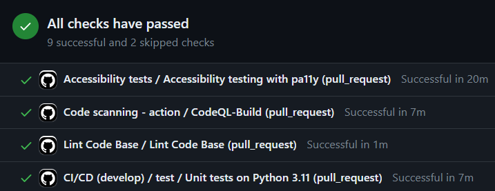
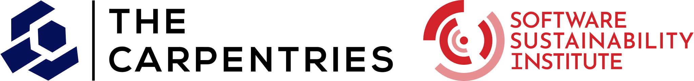

Making Software Sustainable
The Carpentries; Software Sustainability Institute
30 August 2023
Introduction
Slido Setup
About Me
- 2018: MSci Physics from University of Birmingham
- Final project on computational astrophysics
- 2018-2022: Science and Technology Facilities Council
- 2 years on Scientific Computing graduate scheme
- 2 years on muon spectroscopy simulations
- Led training workshops for early career staff
- 2021: Software Sustainability Institute Fellowship
- Focus on training and accessibility
- 2023: The Carpentries - IT Developer
 

Why This Career Path?
- Wanted to remain close to research and academia after graduating
- But I do not like doing research enough to do a PhD
- What I do like is writing scientific code
My ideal job:
writing code that helps people to do their research
This has a name:
Research Software Engineering
Research Software Engineering
If you develop software 1 to support your own research or that of others, you are doing Research Software Engineering!
You may like to describe yourself as a Research Software Engineer (RSE)
You’re welcome in RSE events and spaces, such as the yearly UK RSE Conference
{fig-alt=“RSE logo”}
Why I’m Here
- At STFC I learned many approaches to software engineering, testing, collaboration, and so on
- These were never mentioned during my programming modules at uni
- I left uni with advanced coding skills, but minimal knowledge of best practices
- I want you to know more than I did
- Workshops and talks help to close these knowledge gaps
What is Sustainable Software?
Slido Poll
Definition of Sustainable Software
Sustainability means that the software you use today will be available - and continue to be improved and supported - in the future. 1
Sustainable software is software which: 2
- Is easy to evolve and maintain
- Fulfils its intent over time
- Survives uncertainty
- Supports relevant concerns (political, economic, social, technical, legal, environmental)
Aspects of Sustainability (1/2)
- documentation for users and developers, at all levels of experience
- planning and governance
- support and issue tracking
- community and external contributions
- licensing – the conditions under which a person can use and re-use your software
- funding and contributor time
Aspects of Sustainability (2/2)
- availability and accessibility
- compatibility with operating systems, browsers, and/or assistive technology
- software design and coding standards
- testing
- version control (e.g. Git)
Why Go to All This Effort?
Would you use and trust the results of a microscope or telescope that hadn’t been built by qualified engineers or tested? 1
Software is the most prevalent of all the instruments used in modern science
- 84% of scientists say developing scientific software is important for their own research 2
- But most have learned through self-study, and this leaves gaps
- Only 47% have a good understanding of testing
- Yet even professional SEs introduce 15-50 bugs per 1,000 lines
Why Go to All This Effort?
The consequences of not following best practices can be serious
- A software bug led to the retraction of three Science papers 1
- Journals increasingly demand that both code & data be openly available for review and reproducibility

Case Studies
Unsustainable Software
Two students collaborate to model telescope observations of a specific type of astronomical event.
- They start together, but their code diverges as they each study a different telescope
- As they prepare to submit a paper, one of them introduces a major bug and only notices it at the last minute while doing a manual check
- Six months later, changes are requested – but they no longer remember which code files worked and which were broken
- Replicating their own results is tough
- After the paper is accepted, both students move onto other projects, and don’t touch the code again
Unsustainable Software - Consequences
- The code is difficult to understand and use
- Effectively nobody can replicate the results
- The code for the telescope models cannot be applied to other types of astronomical event, even though the maths is generalised
- A later student must start over from scratch
- The code was never reviewed for bugs
- The published results could contain major errors
- The code is abandoned after the paper is published, and the Python version it used falls out of support soon after
- Using the code in any way becomes harder over time
Sustainable Software
The C++ tool FABBER processes functional magnetic resonance imaging to recognise blood flow patterns in the brain and measure brain activity.
- Originally developed by a single researcher for use in his group
- “while I tried to make it flexible from the outset, it morphed a bit over time and I reached a ceiling of what I could do myself” 1
- Developer requested support from experienced RSEs, and together they redesigned the code
- turned core functions into a reusable library
- allowed analysis models to be plugged in, written by anyone
- added tests using known example inputs and outputs
Sustainable Software - Consequences
- The code is easier to understand and use
- More groups can use it
- Maintenance is easier
- Generalised core features form a standalone package
- Can be applied in new, unforeseen applications
- The code includes a test suite which checks for bugs
- Results are less likely to contain errors
- The code is open-source
- Developers from other groups can contribute and keep the project going
Halfway Point - Question Break
Post questions in Slido Q&A tab
Coming next: How Do I Improve the Sustainability of my Software?
How Do I Improve the Sustainability of my Software?
Heavily inspired by 9 steps for quality research software by Laurence Billingham, Steven Lamerton, Nick Rees, Mike Croucher, Richard Domander, and Carl Wilson
There are a lot of suggestions coming up
You don’t need to do all of them right now
You don’t need to follow them in order
Pick one that resonates with you, and focus on that

In the long run:
Strive to make a small improvement every time you write a new piece of code
1. Admit that you have a problem
Hello, I am Eli, and I’ve written terrible software.
It’s ok to not write perfect code
It’s ok to write very imperfect code
Just don’t deny that your code could be better out of pride or shame
2a. Introduce a version control system…
Version control:
- helps us to track when and why our code was changed
- allows us to undo changes when we discover we broke something
- is essential for large collaborative projects and their contributors
- most commonly Git, but there are others (e.g. Mercurial)
Invest a couple of days in learning, then practice, practice, practice
Put your code on a platform like GitLab or Bitbucket while you’re at it. Now you have a backup!
Ideally, make this open-source
2b. … and make changes little and often
How often do you hit save in your word processor or code editor?
Is it almost reflexive?
Do the same with committing to version control!
You will build up a richer, more searchable, more undo-able history of changes (and it means more practice)
It’s ok to commit something broken, then fix it in a later commit

3a. Get your code to build and run on another machine
Now that your code is hosted openly online, anyone can download it to any other machine - so make sure it will run there!
Try to compile, build, and run your code on a machine that’s not yours
Document these alongside your code:
- Compiler version(s)
- Library version(s)
- Operating system(s)
If your research isn’t reproducible, it isn’t reliable.
3b. Actually, why should building and running be separate?
Save time by using tools that can automate the process
An hour invested now will save you many in the future
Popular choices for C++ are make and cmake
4. You already test things, now formalise it
You (hopefully) already test your code by putting in a known input and making sure it gives you the output you expect.
When you’ve confirmed it works, you delete the test.
Instead, wire that test up permanently using a testing framework, and run it whenever you make a change to ensure you didn’t break anything.
Do this every time you write a new piece of code, and suddenly you have a test suite!

5a. Modularise within your code…
Break your code down into simple chunks or units that do one thing each, and turn them into functions (e.g. loading a file, checking inputs are within valid ranges, plotting a chart)
Now your software is built from many simple interacting components.
It’s much simpler to verify that each function works correctly with individual ‘unit tests.’
5b. … and then modularise within your group
You’ve written a function to solve a particular problem, and now your colleague has the same problem
Get them using the same code!
Now you have another set of eyes making sure your code works - and if either of you find a bug, you can fix it for both of you
In the same way, use and improve functions that your colleagues/friends/enemies have written
Research is better when we help each other
6. Show someone your code, and offer to read theirs
This one can be scary! But it will make your code better
You (hopefully) ask people to review your grant proposals and papers, even if you’ve been writing for years. Why not your code?
In return, offer to review your colleagues’ code too - and be nice
You will learn about functions, packages, and techniques you wouldn’t know about otherwise
7. Automate it all (except the human bits)
Use continuous integration services to automatically build and test your code every time you make changes (e.g. Travis CI, GitHub Actions)
Test multiple OSs, compilers, and environments simultaneously with minimal setup
Many tools are free for open-source/academic projects!

But be warned: this is not a substitute for code review by a human
8. Join a Community of Practice
A community of practice is a group of people who share a concern or a passion for something they do and learn how to do it better as they interact regularly
- HEP communities
- Research Software Engineers (International/UK/US/DE/more…)
- UKRSE Slack welcomes RSEs at all levels
- Software Sustainability Institute
- Offers Fellowships to all career levels and domains to improve software sustainability in their communities
Recap of Steps
- Admit you have a problem
- Use version control, little and often
- Build and run your code on another machine
- Formalise your tests
- Modularise and share
- Give and receive code review
- Automate as much as you can
- Join a community of practice
Conclusion
Conclusion
- Research Software Engineering is a viable career path (that you may already be following)
- Sustainable software is continuously improved and supported, and is not dependent on only one person to survive
- Improve your practices a little bit every time you code, and it will pay dividends
- Better software, better research
Resources
- HEP Software Foundation Training Center - links to modules on Git, Continuous Integration, testing,
cmake, and HEP tools - The Carpentries - Software Carpentry - workshops and self-study material for the Bash Shell, Git, Python, R, and more
- Software Sustainability Institute resources
- The Turing Way - handbook to reproducible, ethical and collaborative data science
Questions
Post questions in the Slido Q&A tab, or contact me:
- Eli Chadwick (he/him and they/them)
- elichadwick@carpentries.org
- @elichad on GitHub
- Chat to me after!
Find these slides at https://github.com/elichad/talks
